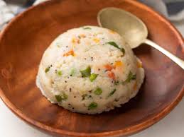

Breakfast & Brunch
Aloo Paratha

Ingredients:
2 cups whole wheat flour
2 medium potatoes, boiled and mashed
1 small onion, finely chopped
1-2 green chilies, finely chopped
1/2 tsp cumin powder
1/2 tsp coriander powder
Salt, to taste
Fresh coriander leaves, chopped
Ghee or oil, for cooking
Instructions:
Prepare the Dough:
In a bowl, mix whole wheat flour with water to form a soft dough. Cover and let it rest for 15-20 minutes.
Prepare the Filling:
In a separate bowl, combine the mashed potatoes with chopped onions, green chilies, cumin powder, coriander powder, salt, and chopped coriander leaves.
Stuff the Paratha:
Divide the dough into small balls. Roll one ball into a small circle.
Place a spoonful of the potato mixture in the center, fold the dough around it, and pinch to seal.
Roll the Paratha:
Gently roll out the stuffed dough ball into a flat circle, about 6-7 inches in diameter.
Cook the Paratha:
Heat a tawa or skillet, place the rolled paratha on it, and cook for 1-2 minutes on each side.
Brush with ghee or oil and cook until both sides are golden brown and crispy.
Masala Dosa

Ingredients:
For Dosa Batter:
1 cup rice
1/4 cup urad dal (split black gram)
1 tbsp chana dal (optional)
Salt, to taste
Water (for soaking and grinding)
For Potato Masala:
2 large potatoes, boiled and mashed
1/2 onion, sliced
1 green chili, chopped
1/2 tsp mustard seeds
1/2 tsp cumin seeds
1/4 tsp turmeric powder
Fresh curry leaves
Salt, to taste
Fresh coriander leaves, chopped
Instructions:
1. Prepare the Dosa Batter:
Rinse and soak rice, urad dal, and chana dal in water for 4-6 hours.
Drain, then grind with a little water to make a smooth batter.
Add salt, cover, and let the batter ferment overnight.
2. Make the Potato Masala:
Heat oil in a pan, add mustard seeds, cumin seeds, and curry leaves, and let them splutter.
Add sliced onions and green chili, and sauté until onions are soft.
Add turmeric powder, mashed potatoes, and salt, and mix well.
Garnish with chopped coriander leaves and set aside.
3. Make the Dosa:
Heat a non-stick tawa or skillet on medium heat. Pour a ladleful of batter in the center and spread it in a circular motion to make a thin crepe.
Drizzle a few drops of oil or ghee around the edges and cook until crispy and golden.
4. Assemble the Masala Dosa:
Place a portion of the potato masala in the center of the dosa.
Fold the dosa over the filling and remove from the pan.
Poha

Ingredients:
1 cup poha (flattened rice)
1 small onion, finely chopped
1 small potato, diced (optional)
1 green chili, chopped
1/4 tsp mustard seeds
1/4 tsp turmeric powder
Salt, to taste
1 tbsp peanuts (optional)
Fresh coriander leaves, chopped
Lemon wedges, for garnish
Instructions:
1. Prepare the Poha:
Rinse the poha under running water in a colander, drain, and let it sit for 5 minutes to soften. Sprinkle a pinch of salt and mix gently.
2. Temper the Spices:
Heat oil in a pan. Add mustard seeds and let them splutter.
Add peanuts and fry until golden (if using). Add chopped green chili and onions, and sauté until onions are soft and translucent.
3. Add Potatoes and Turmeric:
Add diced potatoes and a pinch of turmeric powder, and cook until the potatoes are tender. You can skip this step if you prefer a quicker version.
4. Add Poha:
Add the softened poha to the pan and mix gently to coat with the spices and turmeric. Cook for another 2-3 minutes on low heat, adjusting salt to taste.
Upma

Ingredients:
1 cup semolina (rava or suji)
1 small onion, finely chopped
1-2 green chilies, chopped
1/2 tsp mustard seeds
1/2 tsp cumin seeds (optional)
8-10 curry leaves
1 tbsp oil or ghee
2 1/2 cups water
Salt, to taste
Fresh coriander leaves, chopped (for garnish)
A handful of roasted peanuts or cashews (optional)
1/2 tsp grated ginger (optional)
Instructions:
1. Roast the Semolina:
Dry roast the semolina in a pan on low heat until it turns slightly golden and releases a nutty aroma. Set aside.
2. Prepare the Tempering:
In the same pan, heat oil or ghee. Add mustard seeds and let them splutter.
Add cumin seeds, curry leaves, and green chilies, and sauté for a few seconds.
Add onions and sauté until they become soft and translucent. Add grated ginger if using.
3. Add Water and Boil:
Add water to the pan, season with salt, and bring it to a boil.
4. Add Semolina:
Slowly add the roasted semolina to the boiling water, stirring continuously to avoid lumps.
Keep stirring until the semolina absorbs the water and thickens.
Chole Bhature

Ingredients:
For Chole (Chickpea Curry):
1 cup chickpeas (chole), soaked overnight or use canned
1 large onion, finely chopped
2 tomatoes, finely chopped
1-2 green chilies, chopped
1 tbsp ginger-garlic paste
1/2 tsp turmeric powder
1 tsp red chili powder
1 tsp cumin seeds
1 tsp garam masala
1/2 tsp amchur powder (dry mango powder)
Salt, to taste
Fresh coriander leaves, chopped
For Bhature:
2 cups all-purpose flour (maida)
1/4 cup semolina (optional, for crispiness)
1/2 tsp baking powder
Salt, to taste
1/4 cup yogurt
Water, as needed
Oil, for frying
Instructions:
1. Prepare the Chole (Chickpea Curry)
Cook the Chickpeas: If using dried chickpeas, drain and pressure cook them with salt and water until soft. (If using canned chickpeas, drain and rinse them well.)
Make the Curry:
Heat oil in a pan. Add cumin seeds and let them splutter.
Add onions and sauté until golden brown. Add ginger-garlic paste and cook until the raw smell disappears.
Add tomatoes, turmeric, and red chili powder. Cook until the tomatoes are soft and oil separates from the mixture.
Add Chickpeas:
Add the cooked chickpeas to the pan along with salt and garam masala. Mix well and simmer for 10-15 minutes, mashing some chickpeas to thicken the curry.
Final Touch:
Sprinkle amchur powder and adjust spices to taste. Garnish with chopped coriander leaves.
2. Prepare the Bhature (Fried Bread)
Make the Dough:
In a bowl, mix all-purpose flour, semolina, baking powder, and salt. Add yogurt and enough water to knead a soft dough.
Cover and let it rest for at least 30 minutes.
Roll Out the Bhature:
Divide the dough into small balls. Roll each ball into a flat, oval shape about 6-8 inches in diameter.
Fry the Bhature:
Heat oil in a deep frying pan. Fry each bhatura on medium-high heat until it puffs up and turns golden on both sides.